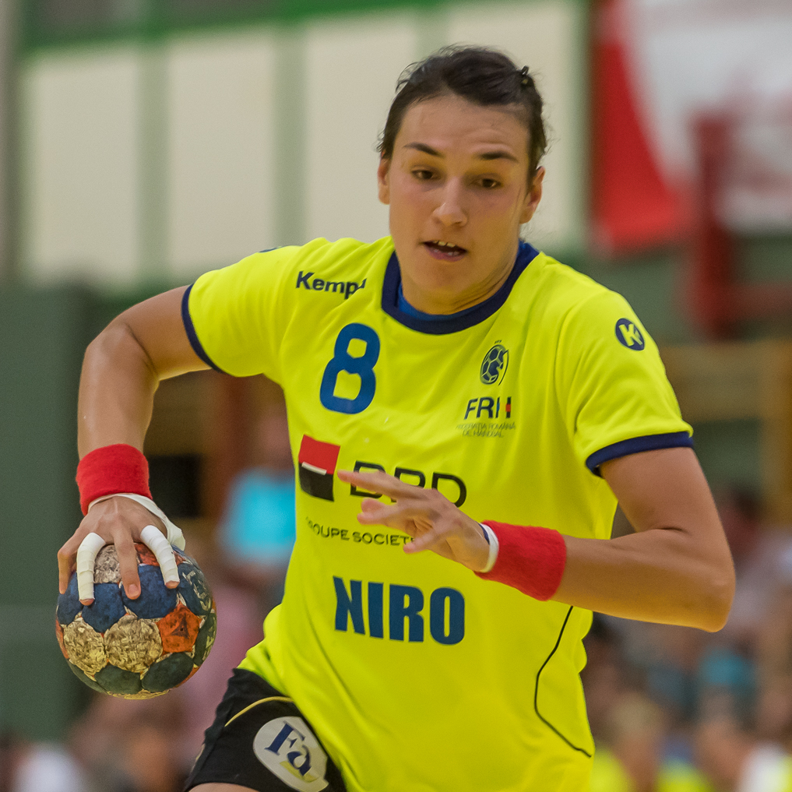

Poucas atletas construíram uma relação tão direta entre nome, seleção e modalidade quanto Cristina Neagu. Durante quase duas décadas, a armadora esquerda romena esteve entre as principais referências do handebol mundial, superou graves lesões, conquistou a Champions League, brilhou em Mundiais e Europeus e estabeleceu marcas que atravessaram gerações.
Nascida em 26 de agosto de 1988, em Bucareste, Neagu terminou a trajetória profissional em 2025. Saiu das quadras como a única atleta a conquistar quatro vezes o prêmio de Jogadora do Ano da Federação Internacional de Handebol (IHF), honraria recebida em 2010, 2015, 2016 e 2018.
Os números ajudam a dimensionar seu lugar na modalidade. Neagu encerrou a participação na EHF Champions League Women como maior artilheira da história da competição, com 1.232 gols. Pela Romênia, marcou 975 gols em 222 partidas. Nos Campeonatos Europeus, terminou com 303 gols e a condição de maior artilheira da história do EHF Euro.
O início da carreira esportiva
Antes de transformar a camisa 8 em uma das mais reconhecidas do handebol europeu, Cristina Neagu teve contato com o basquete e começou a jogar handebol aos 12 anos. Ainda adolescente, passou pelo CSS București e depois chegou ao Rulmentul Brașov, onde começou a disputar competições importantes no cenário profissional.
O talento apareceu cedo também nas seleções de base. Neagu foi escolhida MVP do Europeu Juvenil de 2005 e voltou a receber a distinção de melhor jogadora no Mundial Juvenil de 2006, competição em que a Romênia conquistou a medalha de bronze. No ano seguinte aos 19 anos, ela já disputava seu primeiro Mundial adulto.
Naquele Mundial de 2007, um dos primeiros grandes sinais do que viria pela frente apareceu nas quartas de final contra a França, em Paris. Neagu entrou durante a partida e marcou oito gols na vitória romena por 34 a 31 após a prorrogação. A Romênia terminaria o torneio sem medalha, mas a jovem armadora já havia se colocado entre os nomes de maior potencial do handebol internacional.
Os clubes da carreira
A carreira europeia de Cristina Neagu pode ser dividida em quatro grandes capítulos. Ela atuou pelo Rulmentul Brașov, defendeu o Oltchim Râmnicu Vâlcea, viveu seu período fora da Romênia no Buducnost, de Montenegro, e encerrou a trajetória vestindo a camisa do CSM București, clube de sua cidade natal.
Os registros da Federação Europeia de Handebol mostram Neagu pelo Rulmentul em competições continentais desde a temporada 2006/07. A partir de 2009/10, passou a representar o Oltchim. Entre 2013/14 e 2016/17, atuou no Buducnost, antes de chegar ao CSM București para a temporada 2017/18.
Como armadora esquerda, Neagu combinava potência de arremesso, capacidade para atacar espaços, leitura para criar jogadas e grande responsabilidade nos momentos decisivos. Para quem acompanha a modalidade de forma mais ampla, as características de sua função se conectam às diferentes posições e às funções dos jogadores em quadra.
A conquista do título Europeu
O maior título continental de clubes veio em 2015. Defendendo o Buducnost, de Montenegro, a romena conquistou a EHF Champions League Women, principal competição de clubes do handebol da Europa.
A campanha representou um ponto especialmente importante em sua trajetória porque aconteceu depois de anos marcados por problemas físicos.
Na temporada 2014/15, Neagu também terminou entre as artilheiras da Champions, com 102 gols. Mais tarde, já pelo CSM București, lideraria novamente a pontuação da competição em outras temporadas. O histórico oficial da EHF registra 110 gols em 2017/18 e outros 110 em 2021/22, campanhas em que também terminou como principal goleadora do torneio.
Curiosamente, sua temporada com mais gols na Champions não foi uma daquelas em que ficou com a artilharia. Em 2022/23, ela marcou 118 vezes pelo CSM, sua melhor produção pessoal em uma única edição.
Uma das maiores atuações da carreira no Mundial
Se existe um campeonato capaz de resumir Cristina Neagu em seu auge, é o Mundial feminino de 2015, disputado na Dinamarca.
A Romênia sofreu durante a primeira fase e perdeu para Rússia, França e Espanha, mas conseguiu avançar. Nas oitavas, derrotou o Brasil por 25 a 22. Nas quartas de final, diante da anfitriã Dinamarca, Neagu protagonizou uma de suas atuações mais marcantes.
A partida precisou de prorrogação, e a Romênia venceu por 31 a 30. Cristina Neagu marcou 15 gols. Na semifinal, anotou outros oito, mas as romenas perderam para a Noruega por 35 a 33. A campanha terminou com a medalha de bronze após vitória por 31 a 22 sobre a Polônia.
Neagu fechou aquele Mundial com 63 gols, foi a artilheira do torneio e recebeu o prêmio de MVP da competição. O desempenho contribuiu diretamente para que conquistasse pela segunda vez o prêmio de melhor jogadora do mundo da IHF, depois da primeira vitória em 2010.
Quatro vezes melhor jogadora do mundo
A dimensão de Cristina Neagu fica ainda mais clara quando sua trajetória é colocada ao lado de outras lendas que marcaram gerações. Com quatro prêmios de melhor jogadora do mundo pela IHF, recordes de gols e protagonismo pela seleção romena e nos principais clubes da Europa, ela ocupa lugar de destaque entre os nomes que se confundem com a própria história do handebol no masculino e no feminino.
Ela foi eleita Jogadora do Ano da IHF em:
- 2010 — primeira conquista;
- 2015 — após o grande Mundial com a Romênia;
- 2016 — segundo prêmio consecutivo;
- 2018 — a quarta conquista na carreira.
Ao receber a premiação referente a 2018, Neagu tornou-se a primeira pessoa, considerando também a categoria masculina, a alcançar quatro troféus de Jogador do Ano da IHF. Mesmo depois de sua aposentadoria, ela permanece como a única mulher com quatro conquistas da premiação.
Um recorde histórico
A relação de Cristina Neagu com o Campeonato Europeu também produziu uma marca extraordinária.
No EHF EURO de 2022, a romena ultrapassou o islandês Gudjon Valur Sigurdsson e se tornou a maior artilheira da história dos Campeonatos Europeus considerando conjuntamente os torneios masculino e feminino. Na mesma edição, passou dos 300 gols.
Neagu encerrou sua participação na competição com 303 gols. Pela seleção romena, também conquistou a medalha de bronze no Europeu de 2010, edição em que terminou como artilheira e foi escolhida para a seleção ideal como armadora esquerda. Ao longo da carreira, recebeu quatro vezes a escolha de melhor armadora esquerda de uma edição do EHF EURO: 2010, 2014, 2016 e 2022.
É um registro que ajuda a dimensionar não apenas sua capacidade de pontuar, mas também sua longevidade em torneios de seleções.
Artilharia pela Seleção
Cristina Neagu encerrou sua trajetória defendendo o seu país após o Mundial feminino de 2023. Seu balanço final com a camisa da Romênia foi de 222 partidas e 975 gols.
As duas principais medalhas da carreira adulta pela seleção foram os bronzes no Europeu de 2010 e no Mundial de 2015. A ausência de um grande título com a Romênia não diminuiu a dimensão individual de Neagu. Durante anos, ela foi o principal rosto de uma seleção que permaneceu competitiva contra as grandes potências do continente.
A trajetória também pertence a um contexto esportivo em que competições internacionais e Jogos Olímpicos ajudaram a consolidar a modalidade.
Participações nas Olimpíadas
Apesar de ter construído uma das carreiras individuais mais premiadas da história do handebol, Cristina Neagu não conquistou medalha olímpica. A armadora disputou duas edições dos Jogos pela seleção da Romênia: Pequim 2008, quando a equipe terminou na 7ª colocação, e Rio 2016, em que as romenas ficaram em 9º lugar e não avançaram às quartas de final.
Mesmo sem uma campanha coletiva de destaque no Rio, Neagu teve forte desempenho individual. Ela terminou os Jogos de 2016 como a terceira maior artilheira da competição, mesmo tendo atuado em apenas cinco partidas.
As lesões que quase interromperam a carreira
Os recordes ganham ainda mais peso por causa do tempo que ela passou longe das quadras.
Problemas graves no ombro levaram a uma cirurgia e a um longo período de recuperação no início da década de 2010. Foram 605 dias até o retorno após a operação. Pouco depois, a jogadora sofreu uma ruptura do ligamento cruzado anterior do joelho durante um treinamento pelo Oltchim. Anos mais tarde, no Europeu de 2018, sofreu outra lesão grave no joelho.
No total, Neagu estimou ter passado perto de quatro anos da carreira fora das quadras em razão de diferentes problemas físicos. Ainda assim, voltou ao nível necessário para ser campeã europeia, melhor do mundo e recordista de gols.
Artilharia na Champions League
Em outubro de 2024, Neagu assumiu definitivamente o topo da lista histórica de artilheiras da EHF Champions League Women. Na ocasião, chegou a 1.155 gols e ultrapassou Jovanka Radicevic.
Quando realizou sua última partida na competição, em abril de 2025, o total havia chegado a 1.232 gols. A despedida da Champions ocorreu nas quartas de final, quando o CSM București foi eliminado pelo Team Esbjerg.
Neagu terminou a carreira como integrante do seleto grupo de atletas que ultrapassaram mil gols na maior competição de clubes da Europa e, mais importante, no primeiro lugar da classificação histórica.
A aposentadoria
Ela anunciou em setembro de 2024 que a temporada 2024/25 seria a última de sua carreira. Ela já havia deixado a seleção romena depois do Mundial de 2023 e decidiu dedicar os meses finais exclusivamente ao CSM București.
A carreira competitiva terminou no fim de maio de 2025. Na última temporada, o CSM conquistou o Campeonato Romeno e a Copa da Romênia. Em 8 de junho, Bucareste recebeu uma festa de gala na despedida para Neagu, com cerca de 5 mil torcedores e diversas ex-companheiras e estrelas internacionais reunidas para homenageá-la.
Era o encerramento de uma trajetória iniciada ainda na adolescência e marcada durante anos pela camisa 8.
Os principais feitos de Cristina Neagu:
- Quatro vezes Jogadora do Ano da IHF — 2010, 2015, 2016 e 2018;
- Campeã da EHF Champions League Women em 2015:
- Medalha de bronze no Mundial de 2015 com a Romênia;
- MVP e artilheira do Mundial de 2015, com 63 gols;
- Medalha de bronze no EHF EURO 2010;
- Maior artilheira da história do EHF EURO, com 303 gols;
- Maior artilheira da história da EHF Champions League Women ao encerrar sua participação, com 1.232 gols;
- 975 gols em 222 jogos pela seleção da Romênia;
- Quatro vezes escolhida como melhor armadora esquerda de uma edição do EHF EURO.
O legado para o handebol
Cristina Neagu não encerrou a carreira apenas como uma grande campeã. Terminou como uma das atletas que estabeleceram os parâmetros de excelência de sua geração.
Seus prêmios de melhor do mundo representam o reconhecimento máximo da modalidade. Os 303 gols no Campeonato Europeu demonstram longevidade em seleções. O recorde de gols na Champions League revelam uma produção extraordinária no nível mais alto do handebol de clubes. A campanha do Mundial de 2015, por sua vez, permanece como uma síntese de sua capacidade de decidir partidas sob enorme pressão.
Mas existe outro elemento fundamental em sua história: a capacidade de reconstrução. Neagu sofreu lesões que poderiam ter encerrado sua carreira muito antes de 2025. Voltou de cada uma delas e continuou disputando títulos, quebrando recordes e enfrentando as melhores equipes do mundo.
Por isso, falar sobre Cristina Neagu é contar também uma parte importante da história recente do handebol feminino. Da jovem que apareceu nos torneios de base à recordista que deixou as quadras aos 36 anos, a camisa 8 da Romênia construiu uma carreira que permanece como referência para as próximas gerações.